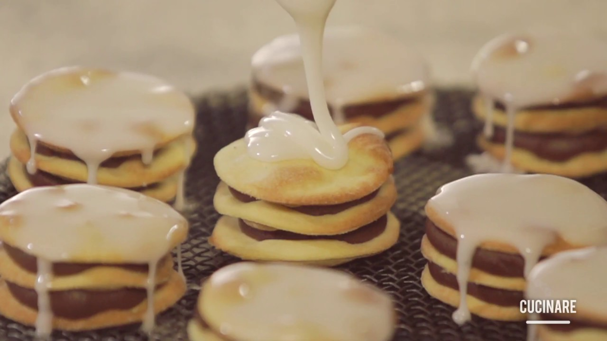

El alfajor santafesino es una joya de la repostería argentina. Tres discos de masa hojaldrada, dorados y crujientes, se apilan con precisión sobre un relleno generoso de dulce de leche artesanal, espeso y brillante, que se desborda con elegancia entre las capas. La cobertura de glasé blanco, suave y ligeramente craquelada, aporta un contraste visual y gustativo que remite a las confiterías de antaño. Ideal para quienes buscan un sabor auténtico y una textura que combina crocante y cremoso en cada bocado.
